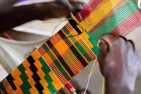

Ghana, known as the "Gateway to Africa", has a history rich in culture, kingdoms, and resilience. From ancient empires to independence, explore the journey of this vibrant nation that continues to inspire visitors from around the world.
Ghana's roots trace back to powerful kingdoms like the Ghana Empire (not in modern Ghana), followed by the rise of the Ashanti and Mole-Dagbani kingdoms. These civilizations were known for their trade in gold, kola nuts, and culture.
Portuguese explorers arrived in 1471, building Elmina Castle in 1482. Ghana became central in the trans-Atlantic trade routes for gold, spices, and, sadly, enslaved people.
The British formally colonized the Gold Coast in the late 1800s. During this time, resistance from the Ashanti people became a symbol of defiance and strength.
Ghana became the first sub-Saharan African country to gain independence from colonial rule on March 6, 1957, led by Dr. Kwame Nkrumah. It became a beacon of Pan-Africanism.
Today, Ghana is a peaceful democracy, known for its hospitality, rich traditions, and booming tourism. From castles to festivals, it’s a country where the past lives in the present.
Festivals, music, art, and traditional cuisine await you!
